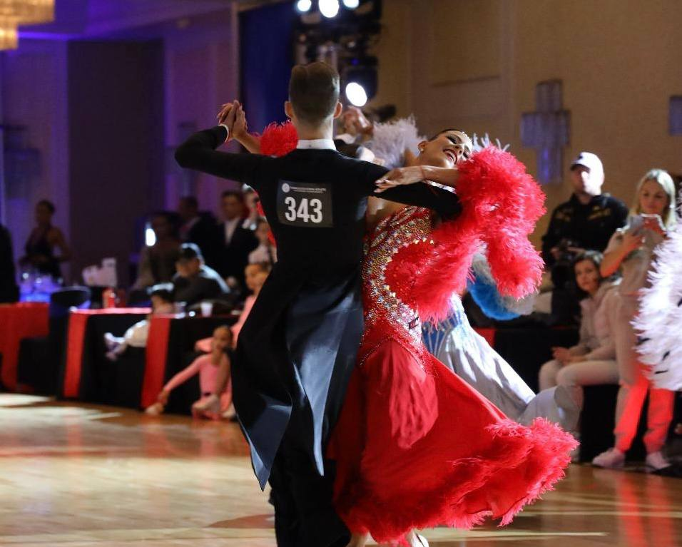

Mykhailo Roshchupkin
I was born in 2006 in Kharkiv. I spent most of my school years in my homecity, but from February 2022 I was forced to leave for safer cities in Europe. Simultaniously with getting a Ukrainian education, I studied for a semester at the British School (Munich, Germany, 2022) and a year at the Spanish School (Barcelona, Spain, 2022-2023).
Those are some things that I like to do when I have free time:
- Workout
- Play Computer games
- Dance
- Listen to music
My GitHub Page:
LINK